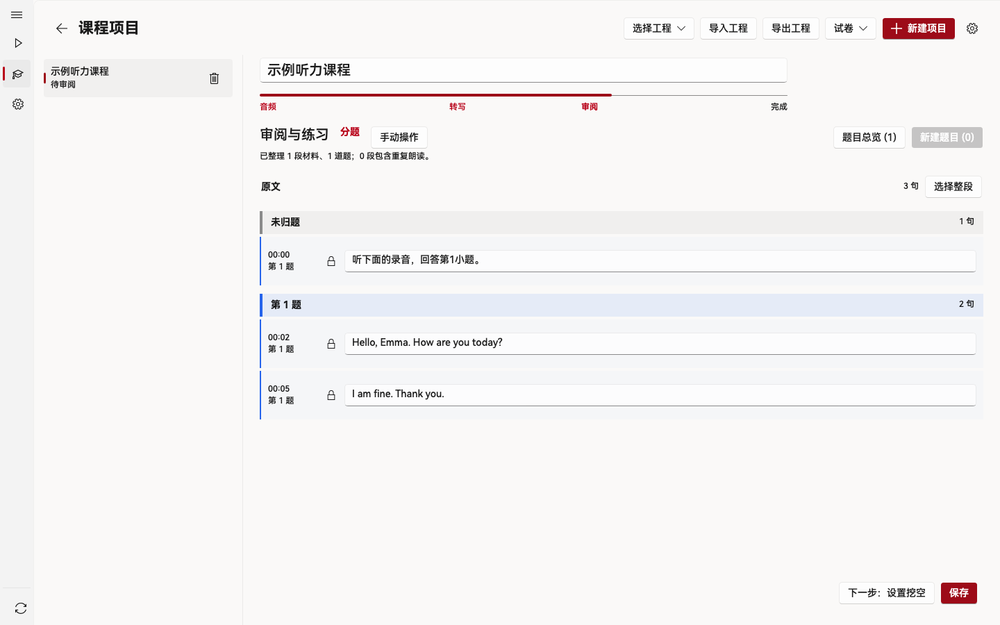
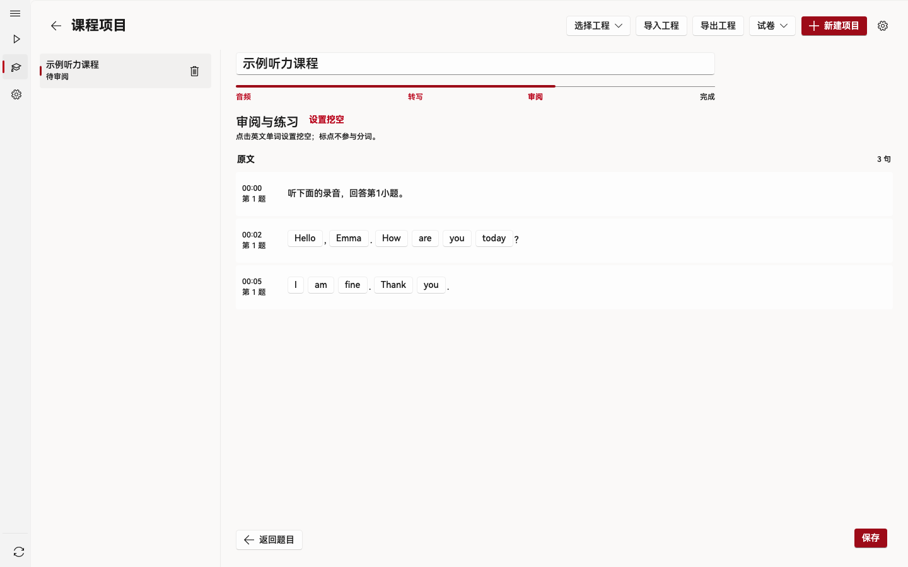
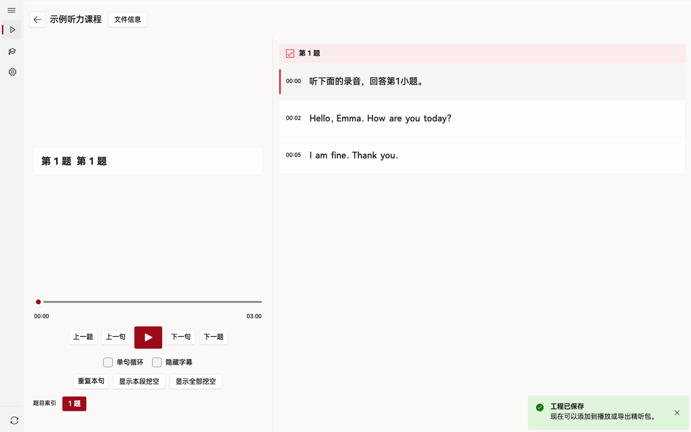
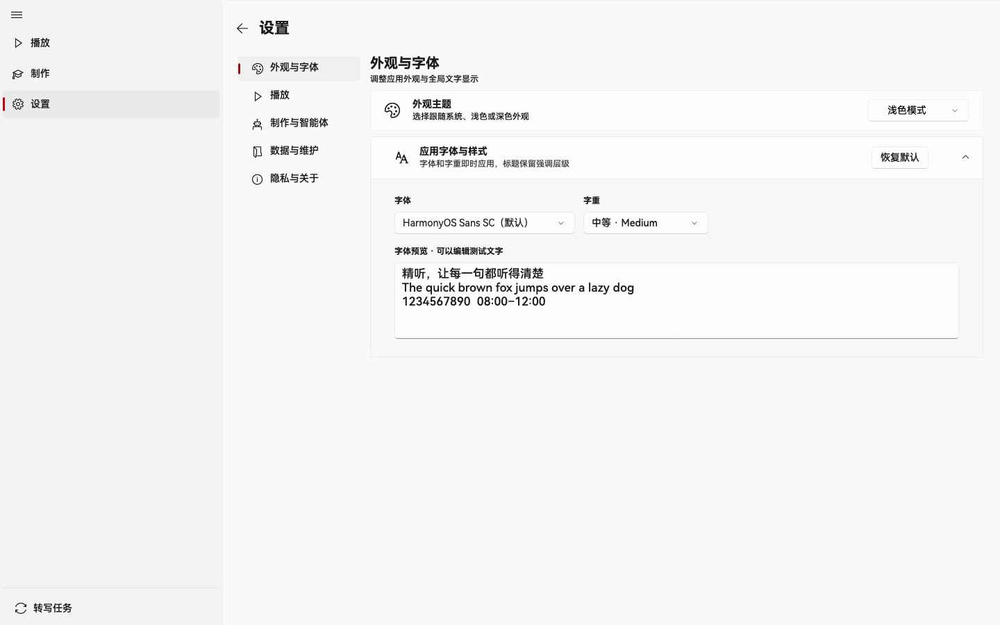

安装与准备
教师制作与学生练习都在 Intensive Listening 桌面应用中完成。
macOS 26.0+，Apple Silicon
下载 DMG，打开后把应用拖入 Applications。首次打开若被系统拦截，可在「系统设置 → 隐私与安全性」中选择「仍要打开」；参见Apple 官方说明。
人工制课至少需要一段 MP3、M4A 或 WAV 音频；试卷、答案、听力原文和已有 SRT 可帮助校对。智能体制课可附加多份 DOCX 或文字版 PDF。学生从教师处取得 .ilp 精听包即可练习。
首次运行
首次启动会在主窗口中引导完成协议和基本设置，之后进入课程工作区。
确认协议与隐私选项
阅读用户协议和隐私说明，按需选择匿名数据分析。之后仍可在「设置 → 隐私与关于」查看或调整。
选择播放与制作设置
根据用途设置 MCP、跳过题前提示与转写 API。Windows 还可关联
.ilp文件，之后双击课程包即可交给应用打开。云端转写的 Key 可以稍后配置。进入工作区
在「制作」创建课程，或在播放区域导入教师交付的
.ilp。学生使用已有精听包时无需配置 ASR。
配置阿里云百炼转写
教师需要从音频自动生成字幕时，先配置自己的百炼 API Key。已有匹配的 SRT 可直接导入。
创建 API Key
打开阿里云百炼控制台，开通服务并进入「API Key」页面。以华北 2（北京）为例，选择可调用语音转写模型的业务空间，创建并复制 Key。地域、接入域名与模型要相互对应。
完成标志已取得可用的 API Key。
填写应用配置
在 Intensive Listening 中打开「设置 → 制作与智能体 → API 设置」。北京地域可使用应用预置的下列参数；如默认值相同，只需填写 Key。
- API Endpoint
https://dashscope.aliyuncs.com- Path
/api/v1/services/aigc/multimodal-generation/generation- Name
qwen-audio-3.0-asr-flash- Key
- 粘贴自己的百炼 API Key
- 分段并发
- 默认 10，可设置为 1–10
- 单段超时
- 默认 180 秒
点击「保存 API 配置」。如果使用其他地域，先按阿里云地域说明核对接入地址与模型。
开始转写
回到课程项目，绑定音频后在「转写」步骤点击「开始转写」。任务加入队列；可在任务中心查看进度、取消、重试或导出 SRT。完成后返回工程校对逐句字幕。
完成标志工程显示与音频对应的字幕和时间轴。
参考：阿里云 API Key 说明。
从音频制作精听包
在「制作」中点击「新建项目」，选择「人工制作」，按「音频 → 转写 → 审阅 → 完成」推进。
创建工程并绑定音频
新建空白工程，设置标题并选择一段 MP3、M4A 或 WAV 音频。需要参考试卷时，可以导入 DOCX 并提取文字；制作工程也能通过 ZIP 导入或导出。
完成标志工程显示已绑定音频，进入转写步骤。
生成或导入字幕
配置云端 ASR 后点击「开始转写」，或导入时间与音频匹配的 SRT。转写任务会显示状态和进度，完成后可载入字幕。
完成标志出现逐句字幕与时间轴。
校对原句与题目
播放音频，修正字幕文字和时间点；必要时合并或拆分句子。按对话、独白组织材料，填写题号、题干、选项和答案，并绑定音频区间。标记题前提示与重复朗读区间。
完成标志题目、答案与对应句子核对完成。
设置挖空
进入「设置挖空」，点选要学生重点辨听的英文单词。同一材料的重复朗读区间会同步对应的挖空设置。
完成标志目标词以挖空状态显示。
保存并交付
编辑会自动保存为草稿。确认课程内容后点击「保存」，再选择「导出为精听包」生成
.ilp，或「添加到播放」在本机练习。后续修改后需再次保存，才会显示交付操作。完成标志取得可分享的
.ilp文件，或在本机课程列表中看到它。


让智能体协助整理课程
应用负责保存和审阅工程；材料读取与整理由电脑上的智能体完成。教师在应用中决定接管授权和最终交付。
进入智能体制作入口
在「制作」点击「新建项目」，选择「智能体制作」。选一个必需的音频，可修改课程标题，并按需加入多份试卷、听力原文或答案。材料推荐 DOCX 或文字版 PDF。
完成标志页面列出音频、标题和所选材料。
连接本机智能体
启用 MCP，点击「复制 MCP 配置」，将内容添加到支持 HTTP MCP 的智能体客户端，例如 WorkBuddy。然后点击「复制提示词」，把生成的文本粘贴到智能体对话框并发送。实际模型在客户端中选择。
完成标志客户端连接应用并开始读取制作说明。
确认首次接管
智能体会先检查连接并以自报名称注册，取得专属 MCP URL。首次申请接管时，应用显示名称和 60 秒审批；确认后才开始操作。可以在「设置 → 制作与智能体 → MCP」查看注册与授权，撤销授权或删除注册。
完成标志应用显示当前智能体、制作步骤和进度。
查看进度并审阅
制作过程分为 11 步，涵盖音频与材料、转写、字幕校对、题目编排、重复朗读、挖空、校验与交还。应用显示步骤状态、详情和百分比；转写与资料提取可以并行。智能体交还应用后，打开工程检查每道题与字幕。
完成标志工程内容经过人工审阅。
保存并导出
确认内容后在应用中点击「保存」，再选择「导出为精听包」或「添加到播放」。如继续编辑，完成修改后再次保存。
完成标志课程成为可练习的
.ilp或本机课程。
围绕原句反复练习
从教师处取得 .ilp 后即可开始。也可以打开普通音频播放；题目和挖空练习来自精听包。
导入课程
在播放区域导入教师提供的
.ilp，从本机课程列表打开。Windows 关联文件后还可双击课程包进入应用。按题或按句定位
左侧看题干和选项，右侧看跟随播放高亮的逐句时间轴。使用上一句、下一句、上一题、下一题，或点击句子定位；按需显示或隐藏答案。
循环、盲听与核对
开启单句循环，反复听当前句；隐藏字幕进行盲听，之后点击挖空词槽揭晓拼写，也可以批量显示或隐藏当前材料的挖空。题前提示和重复朗读区间可以展开或折叠。
继续上次练习
应用保存课程练习进度，再次打开可接着听。可在设置中调整字幕字号和是否跳过题前提示。

字体与扩展按键
在设置中调整阅读与播放习惯。
选择自己读得舒服的字
打开「设置 → 外观与字体」，选择系统字体和字重，编辑预览文字即时查看效果；需要时点击「恢复默认」。播放页字幕字号在「播放」分类中调整。
用一个按键控制练习
打开「设置 → 播放 → 扩展按键」，给播放／暂停、上一句／下一句、上一题／下一题、重听当前句和字幕显隐录入单键。PageUp、PageDown 适合翻页笔；按键只在应用前台的播放页生效。

常见问题
转写提示 API 未配置
按百炼配置步骤核对地址、模型和 Key，保存后重试。已有与音频对应的 SRT 时，可直接导入字幕。
智能体无法开始制课
确认 MCP 已启用，客户端使用应用复制的配置，并已发送制作提示词。首次接管还需要在应用内批准；授权状态可在 MCP 设置中查看。
macOS 首次打开受到系统拦截
当前 DMG 采用 ad-hoc 签名。尝试打开应用后，在「系统设置 → 隐私与安全性」找到「仍要打开」，按系统提示确认。请从本网站或正式版 Release获取安装包；操作路径参见Apple 官方说明。